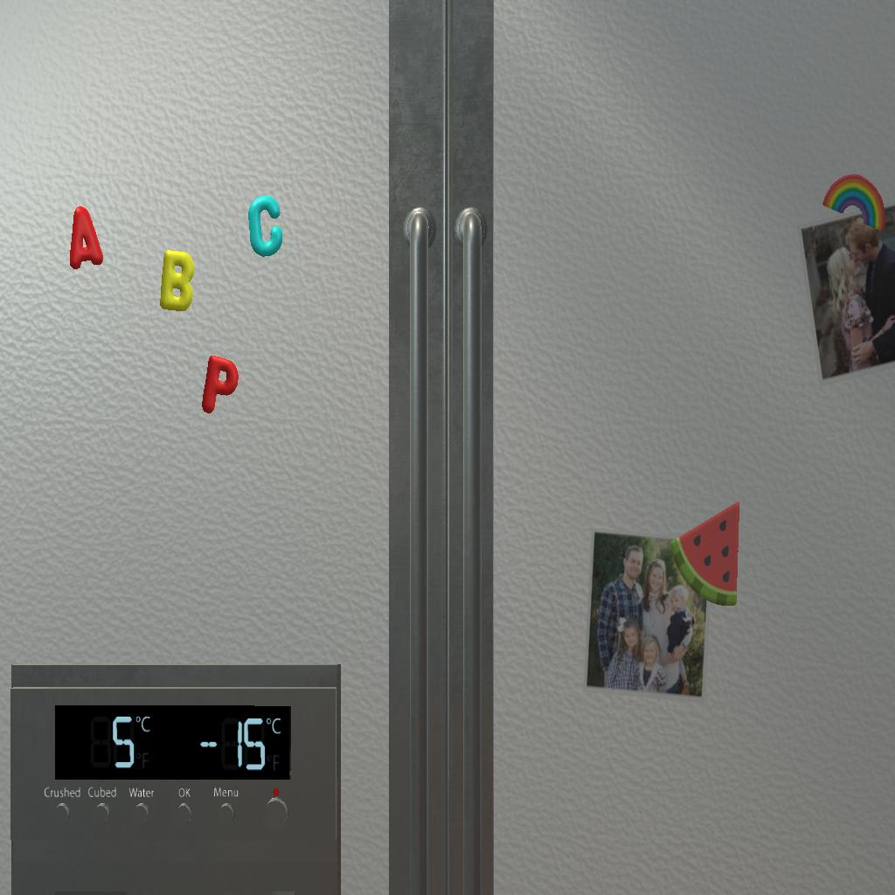

---------------------------------------------------------task: 12---------------------------------------------------------
--------------------------------------------------------------------------------------------------------------------------------------------------------------------
--------------------------------------------------------------------------------------------------------------------------------------------------------------------
Step:--------------------------------------------------------------------------1-------------------------------------------------------------------------------
----------------------------------------
VLM Prompt:
**Task**
Please perform as an embodied AI agent. Our final objective is to clean some tomato and put it in countertop. Below is the plan for completing the task, the current observation, alongside historical data and admissible actions for the next step. Please determine the best action for the next step!
**Plan**
Below is a detailed step-by-step plan to complete the task.
1. Find a tomato.
2. Pick up the tomato.
3. Find a sink or basin.
4. Clean the tomato with the sink or basin.
5. Find a countertop.
6. Place the cleaned tomato on the countertop.
**Current Observation**
Displayed is an image capturing the current position of the agent.
Objects in The Image: ['refrigerator', 'magnetic letters A, B, C, P', 'refrigerator handles', 'temperature display', 'crushed ice option', 'cubed ice option', 'water dispenser option', 'OK button', 'menu button', 'red indicator light', 'rainbow sticker', 'watermelon sticker', 'photograph with watermelon sticker']
**History Information**
Displayed are the previous observations with their corresponding actions.
State 0:
No history.
State 1:
1. Step Index in the Plan: 1
2. Objects: Kitchen Sink, Faucet, Window, Trash Can, Tile Wall
3. Action: go to fridge 1
**Admissible Actions**
(1): go to cabinet 1
(2): go to cabinet 2
(3): go to cabinet 3
(4): go to microwave 1
(5): go to cabinet 4
(6): go to cabinet 5
(7): go to cabinet 6
(8): go to countertop 1
(9): go to coffeemachine 1
(10): go to toaster 1
(11): go to countertop 2
(12): go to sink 1
(13): go to sinkbasin 1
(14): open fridge 1
(15): close fridge 1
**Analysis Guideline**
1. Analyze the history and current observation, and then determine our current step in the plan and our current place.
2. List all visible objects related to the task in the current observation, without summarizing any as "various items."
3. Analyze the objects in the current observation based on the history and the requirements for the current step, and then determine if we can complete the step with the current observation.
4. Analyze and decide on the most appropriate action to take.
5. Summarize the analysis using the following format: "Analysis: [The summarization of the analysis], The Most Appropriate Action: (i which is the integer.): [Selected action]"
**Notes**
1. We must complete each step of the plan in order and cannot skip steps when the previous ones are not finished.
2. For "Go to" actions listed as "go to xxx [n]", interpret this as there are n distinct actions available: "go to xxx 1", "go to xxx 2", ..., "go to xxx n". Select one specific action from these options instead of using "go to xxx [n]".
3. If receptacles such as drawers, cabinets, and so forth are closed in the current observation, we may try to open them.
4. Pay attention to synonyms and ensure clarity in the terms used.
5. We must determine and provide the single action which must be in the **Admissible Actions**.
6. If there is no history available, we are at the first step and the current place is "Unknown".
**Answer**
Please select the most suitable action by following the **Analysis Guideline**, keeping the above **Notes** in mind.
----------------------------------------
----------------------------------------
VLM Response:
Analysis: The current step in the plan is to find a tomato, which is step 1. Since we are at State 1 and the action taken was "go to fridge 1", we are currently observing the refrigerator, which is indicated by objects such as the magnetic letters, refrigerator handles, and temperature display. The objects visible in the current observation that are related to the task include the refrigerator and potentially its content, which is not visible but may contain a tomato. No tomatoes are visible in the current observation. Since the objective of the current step is to find a tomato and the refrigerator is a common place where tomatoes might be stored, the most appropriate action to take next would be to open the refrigerator to check for a tomato inside.
The Most Appropriate Action: (14): open fridge 1
----------------------------------------
----------------------------------------
>>> Refine VLM Response and Get Pure Action: open fridge 1
----------------------------------------
-----------------------------------------------------------------
Running time: 12.373769760131836 seconds
Total Money: 0
-----------------------------------------------------------------
-----------------------------------------------------------------
Summarization Prompt:
**Context**
Analysis: Since there is no history information, we are at the first step in the plan, which is to find a statue. The current place is unknown. In the current observation, we see a floorlamp next to an armchair with a small table that has a small object on it, which could potentially be the statue we are looking for. Since the plan requires us to find a statue first and it appears there might be one on the table next to the armchair, we should investigate this object to determine if it is the statue we need.
The Most Appropriate Action: (1): go to armchair 1
**Summary**
1. Step Index in the Plan: 1
2. Objects: Floorlamp, Armchair, Small Table, Small Object (potential statue)
3. Action: go to armchair 1
**Context**
Analysis: The current step in the plan is to find a tomato, which is step 1. Since we are at State 1 and the action taken was "go to fridge 1", we are currently observing the refrigerator, which is indicated by objects such as the magnetic letters, refrigerator handles, and temperature display. The objects visible in the current observation that are related to the task include the refrigerator and potentially its content, which is not visible but may contain a tomato. No tomatoes are visible in the current observation. Since the objective of the current step is to find a tomato and the refrigerator is a common place where tomatoes might be stored, the most appropriate action to take next would be to open the refrigerator to check for a tomato inside.
The Most Appropriate Action: (14): open fridge 1
Please summarize the context by following above examples when providing the summary, and ensure that only the summary is included, without any extra explanation.
**Summary**
-----------------------------------------------------------------
-----------------------------------------------------------------
Summarization Response:
1. Step Index in the Plan: 1
2. Objects: Magnetic Letters, Refrigerator Handles, Temperature Display, Refrigerator
3. Action: open fridge 1
-----------------------------------------------------------------
-----------------------------------------------------------------
Text Observation:You open the fridge 1. The fridge 1 is open. In it, you see a apple 1, and a potato 1.
-----------------------------------------------------------------
UNSUCCEED